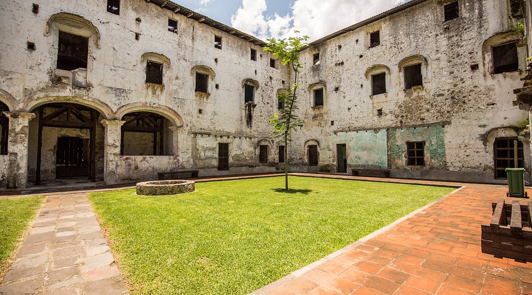

Ex convento de san jose
uno de los últimos conventos erigidos en México durante ese siglo y el más grande del estado de Veracruz.
Romanchu

los orizabeños narran que al pasar por el inmueble abandonado a altas horas de la noche, gritos y
ruidos extraños emanan del interior
Panteon
Se cuenta que durante la noche, la niña camina entre las tumbas en busca de sus padres, siempre acompañada
por el ángel. Algunos afirman que la niña concede deseos a aquellos que la visitan y que, cuando estos se cumplen,
algún niño de la familia debe llevarle un juguete o una flor como agradecimiento.